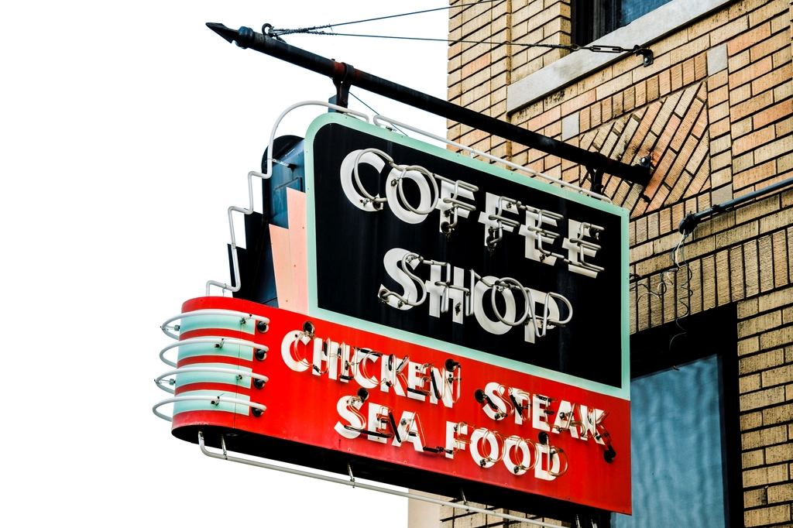
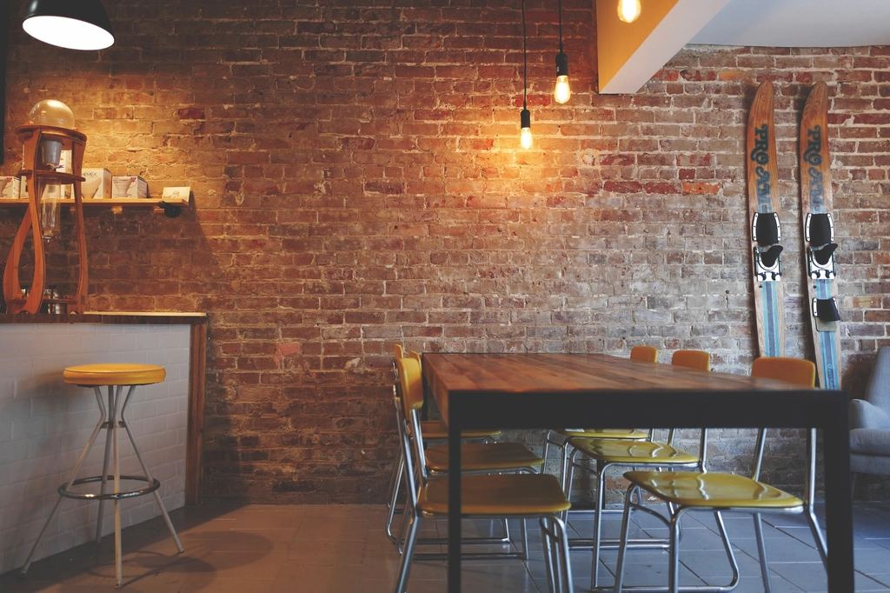
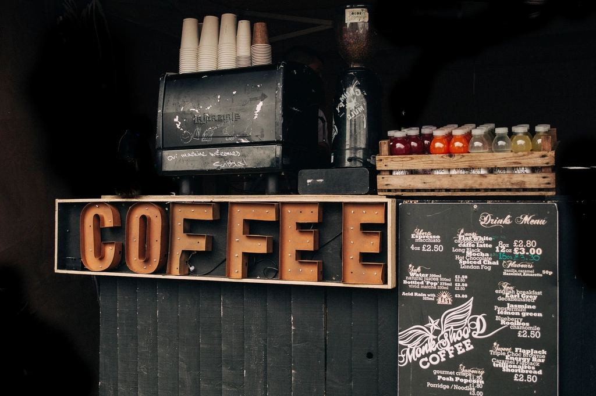

Not built yet — this list decides
Second Visit
You paid to win every name in that customer list, and have never sent them anything. We bring back the customers you already paid for, and report what came back in euros.

What you get

A win-back campaign to your lapsed customers, written and sent for you

An after-visit follow-up and a seasonal calendar that runs itself

A monthly report in euros
customers returned and revenue recovered
Where this is
Today — finding out if it should exist
You are early. Nothing is built yet, and that is the point: the people on this list decide what gets built.
Next — the first version, for this list only
Everyone here sees it before anyone else, and pays less than everyone else, permanently.
Then — open to everyone
At full price, with the list's fingerprints all over it.
Join the waitlist
A name and an email. No spam, no drip sequence — you hear from us when there is something real to see.
Straight answers
Cost to join
Nothing
What you get
First access, lower price
How often we write
Only when it matters
Leaving
One click, any time
Want it to exist?
That is the whole ask. A name on the list is the signal that decides whether this gets built.
Join the waitlist